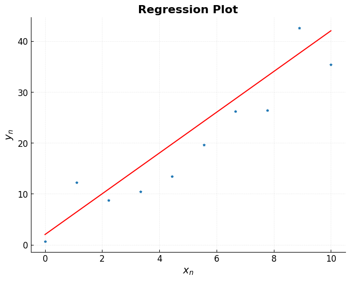
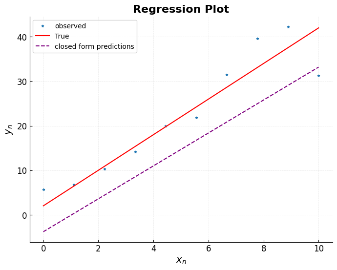
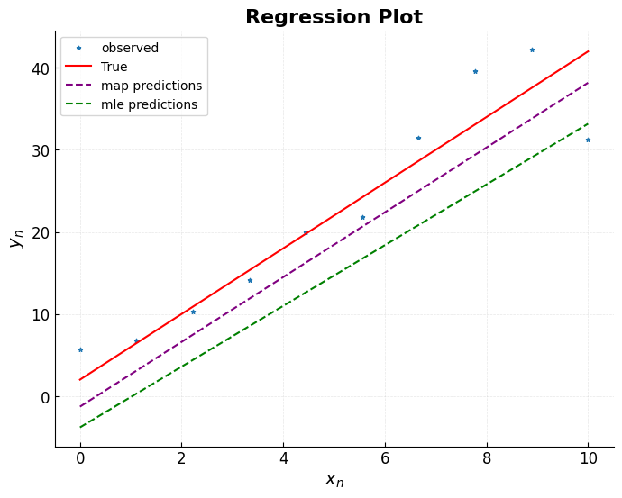
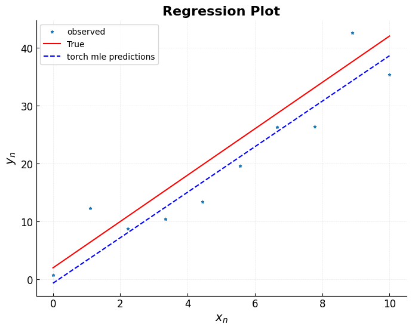

Model Structure#
In linear regression, the target variable \(y\) is assumed to follow a linear function of one or more predictor variables, \(x_1,…,x_D\), plus some random error.
\begin{align} y_n &= \beta_0 + \beta_1 x_n + … + \beta_D x_{nD} + \epsilon \ &= \mathbf{\beta}^T \mathbf{x_n} + \epsilon \end{align} at the \(n^{th}\) observation
Now, to generalise this to the full vector form for all \( N \) observations, you simply stack the individual observations \( y_n \) into a vector \( \mathbf{y} \), and likewise the inputs \( \mathbf{x}_n \) into a design matrix \( \mathbf{X} \). Voala!, the vectorised model:
Where:
\( \mathbf{y} \in \mathbb{R}^N \)
\( \mathbf{X} \in \mathbb{R}^{N \times D} \) (or \( N \times (D+1) \) if you include the bias term explicitly)
\( \boldsymbol{\beta} \in \mathbb{R}^D \) (or \( D+1 \))
\( \boldsymbol{\epsilon} \in \mathbb{R}^N \) is the vector of error terms
import matplotlib.pyplot as plt
import numpy as np
rng = np.random.default_rng(97)
plt.rcParams.update({
'axes.spines.top': False,
'axes.spines.right': False,
'axes.labelweight': 'bold', # Bold axis labels
'axes.labelsize': 14,
'axes.titlesize': 16,
'axes.titleweight': 'bold', # Bold title
'xtick.labelsize': 12,
'ytick.labelsize': 12,
'xtick.direction': 'in', # ticks go inward
'ytick.direction': 'in',
'grid.alpha': 0.3,
'grid.linestyle': '--',
'grid.linewidth': 0.5,
'figure.figsize': (8, 6),
'axes.grid': True
})
# true generating fuction y = 4x - 2
n_samples = 10
beta_true = [-2, 4]
x = np.linspace(0, 10, n_samples)
def true_f(x):
return beta_true[1]*x - beta_true[0]
y_obs = true_f(x) + rng.normal(loc=0, scale=5, size=x.shape)
def view():
plt.scatter(x, y_obs, marker="*", s=10, label="observed")
plt.plot(x, true_f(x), color="red", label="True")
plt.title("Regression Plot")
plt.xlabel(r"$x_n$")
plt.ylabel(r"$y_n$")
view()

Parameter Estimation#
1. Minimise Loss#
i.e, difference between what estimated parameter outputs ( fitted values ,”\(y\_{pred}, \hat{y}\)) from true \(y_n\) (targets).
\begin{align} \mathcal{L(\hat{\beta})} &= \frac{1}{N} \sum_{n = 1}^N ( y_n - \hat{y}n )^2 \ &= \frac{1}{N} \sum{i = 1}^N ( y_n - \mathbf{\hat{\beta}}^T \mathbf{x_n} )^2 \ &= \frac{1}{N} ( \mathbf{y} - \mathbf{X}\mathbf{\hat{\beta}} )^T( \mathbf{y} - \mathbf{X}\mathbf{\hat{\beta}} )\ &= \frac{1}{N} | \mathbf{y} - \mathbf{X} \hat{\boldsymbol{\beta}} |^2 \tag{2} \end{align}
and \begin{align} \mathbf{y} \in \mathbb{R}^N, X \in \mathbb{R}^{N \times (D +1)} \end{align}
\(D + 1\) , plus intercept, \(\beta_0\)
choose parameter vector \(\hat{\boldsymbol{\beta}}\) that minimises the loss function.
Exact solution For convenience, let’s drop the hat notation on \(\hat{\boldsymbol{\beta}}\) , and redescribe: $\( \mathcal{L}(\boldsymbol{\beta}) = \frac{1}{N} (\mathbf{y} - \mathbf{X}\boldsymbol{\beta})^T (\mathbf{y} - \mathbf{X}\boldsymbol{\beta}) \)$
We want to find: $\( \hat{\boldsymbol{\beta}} = \arg \min_{\boldsymbol{\beta}} \mathcal{L}(\boldsymbol{\beta}) \)$
finding the min of the expression:
Bayesian Framework for Linear Regression#
bayes $\( P(\theta|y) = \frac{\overbrace{P(y|\theta)}^{\text{Likelihood}} \times \overbrace{P(\theta)}^{\text{Prior}}}{\underbrace{P(y)}_{\text{Evidence}}} \)$
Likelihood: Quantifies how well the model explains the observed data.
Prior: Encodes beliefs about parameters before seeing data.
Evidence: Normalizing constant (often intractable, handled via MCMC/VI).
The likelihood is a statistical concept used to identify the most likely value of a parameter given the observed data. It reflects the explanatory power of a model and allows for relative comparisons between different parameter values between different parameter values. Ergo, Maximising likelihood gives a method of estimating parameters.
For the model: $\( \mathbf{y} = \mathbf{X}\boldsymbol{\beta} + \boldsymbol{\epsilon}, \quad \boldsymbol{\epsilon} \sim \mathcal{N}(0, \sigma^2 \mathbf{I}) \)\( The likelihood is derived from the noise distribution: \)\( P(\mathbf{y}|\boldsymbol{\beta}, \sigma^2) = \frac{1}{(2\pi\sigma^2)^{N/2}} \exp\left(-\frac{1}{2\sigma^2} \|\mathbf{y} - \mathbf{X}\boldsymbol{\beta}\|^2 \right) \)$
Gaussian kernel \(\exp(-\text{SSE}/(2\sigma^2))\) penalizes large residuals.
3. From Likelihood to MLE#
Negative log-likelihood (NNL) transformation: $\( -\log P(\mathbf{y}|\boldsymbol{\beta}, \sigma^2) = \frac{N}{2}\log(2\pi\sigma^2) + \frac{1}{2\sigma^2}\|\mathbf{y} - \mathbf{X}\boldsymbol{\beta}\|^2 \)$
Monotonicity of Log preserves optimization extrema. and logs are easier to deal with.
which will give same result
# X in N, D -> Npoints, 1
xx = np.stack((np.ones(x.shape[0]), x), axis = -1)
beta_mle = np.linalg.inv(xx.T @ xx) @ xx.T @ y_obs
y_mle = beta_mle[1]*x - beta_mle[0]
view()
plt.plot(x, y_mle, linestyle="--", color="purple", label="closed form predictions")
plt.legend()
plt.show()

observe:
Overfitting , its fitting to the noise!
mass estimates (single \(\hat{\boldsymbol{\beta}}\)) lacks probabilistic interpretation.
Bayesian ++:#
Priors (encode assumptions):
Gaussian prior (ridge regularization)
$\(
P(\boldsymbol{\beta}) = \mathcal{N}(\mathbf{0}, \tau^2 \mathbf{I})
\)\(
*Shrinks coefficients toward 0; \)\tau^2$ controls strength.*
Combining likelihood and priors via Bayes’ theorem: $\( P(\boldsymbol{\beta}, \sigma^2 | \mathbf{y}) \propto P(\mathbf{y}|\boldsymbol{\beta}, \sigma^2) \cdot P(\boldsymbol{\beta}) \)$
Log-Posterior
MAP
Differentiate w.r.t. \(\boldsymbol{\beta}\) , set to zero:
Rearrange:
Key Takeaways
MLE ≡ OLS under Gaussian noise, but both are prone to overfitting.
Bayesian methods provide:
Regularization through priors.
Full uncertainty quantification.
Always check: Posterior predictive distributions against real data.
lambda_ = 10
beta_map = np.linalg.inv(xx.T @ xx + lambda_ * np.identity(xx.shape[1])) @ xx.T @ y_obs
y_map = beta_map[1]*x - beta_map[0]
view()
plt.plot(x, y_map, linestyle="--", color="purple", label="map predictions")
plt.plot(x, y_mle, linestyle="--", color="green", label="mle predictions")
plt.legend()
plt.show()

Bayesian vs. Frequentist Outputs
Approach |
Output |
Pros |
Cons |
|---|---|---|---|
MLE/OLS |
Point estimate \(\hat{\boldsymbol{\beta}}\) |
Fast, simple |
No uncertainty, overfits |
Bayesian |
Posterior distribution |
Uncertainty-aware, regularized |
Computationally intensive |
Optimise with an optimiser#
The loss is often intractable, requiring numerical or approximate optimisation .
There are many classical ways to go about this, to do this: Newton–Raphson, quasi-Newton methods, coordinate descent, and so on. In ML primarily use and use gradient-based optimisation, exactly the kind of thing PyTorch is built for.
We want to minimise the mean squared error objective (2)
Instead of solving for \(\hat{\boldsymbol{\beta}}\) directly, we treat it as a set of learnable parameters and iteratively improve them.
Gradient descent intuition
PyTorch builds a computation graph, which allows it to automatically compute gradients of \(\mathcal{L}\) with respect to \(\hat{\boldsymbol{\beta}}\) using backpropagation.
If the loss has a (global) minimum, we can reach it by repeatedly moving in the opposite direction of the gradient, since the gradient points towards the direction of steepest increase.
The basic gradient descent update rule is
where:
\(\eta\) is the learning rate
\(\nabla_{\hat{\boldsymbol{\beta}}} \mathcal{L}\) is the gradient of the loss with respect to the parameters
This is exactly what PyTorch optimisers do under the hood.

Why bother with optimisation?#
Let’s be blunt:
Closed-form solutions don’t always exist
Even when they do, they don’t scale well
Modern models are too large and too non-linear
Optimisation IS the default approach in modern machine learning.
import torch
#convert data into torch tensors
y_tensor = torch.tensor(y_obs, dtype=torch.float32) #float32 lower precison for faster trainig.
x_tensor = torch.tensor(x, dtype=torch.float32)
#start with random weights
betas = torch.randn(2, requires_grad=True) # requires grad is to tell pytorch to ...
#hyperparams
n_iters = 100
lr = .001
for i in range(n_iters):
# This is the algorithm for training with torch its almost always the same.
##make predictions
y_preds = betas[0] + x_tensor * betas[1]
## sums of errors in (2)
loss = ((y_preds - y_tensor)**2).mean()
##Backpropagation
loss.backward()
# Gradient descent update
with torch.no_grad():
betas -= lr * betas.grad
# clear gradients, they accumulate by default
betas.grad.zero_()
if i % 10 == 0:
print(f"iter {i:3d} | loss = {loss.item():10.3f} | {betas[0]:4.3f}, {betas[1]:4.3f}")
iter 0 | loss = 259.730 | -1.112, 1.564
iter 10 | loss = 73.053 | -0.920, 2.813
iter 20 | loss = 30.978 | -0.823, 3.405
iter 30 | loss = 21.486 | -0.771, 3.685
iter 40 | loss = 19.336 | -0.739, 3.817
iter 50 | loss = 18.840 | -0.718, 3.879
iter 60 | loss = 18.717 | -0.702, 3.907
iter 70 | loss = 18.678 | -0.688, 3.920
iter 80 | loss = 18.658 | -0.675, 3.925
iter 90 | loss = 18.643 | -0.663, 3.926
betas.detach_()
y_torch = betas[0] + x_tensor * betas[1]
view()
plt.plot(x, y_torch, linestyle="--", color="blue", label="torch mle predictions")
plt.legend()
plt.show()
